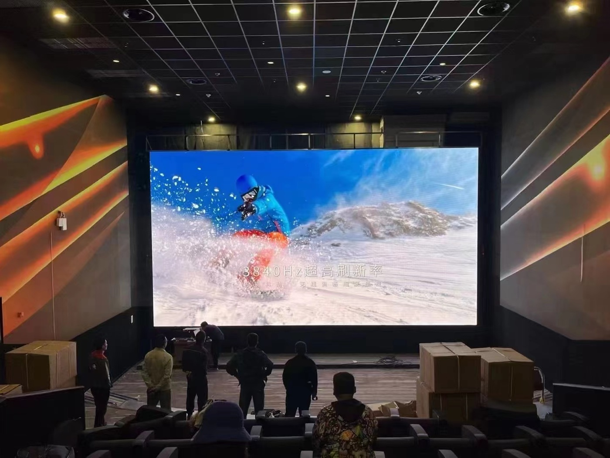

By David
How do you choose between an indoor and an outdoor LED display? The answer starts with the environment, not the price list. In an indoor vs outdoor led display comparison, the outdoor screen must survive moisture, ultraviolet light, heat and temperature swings, while the indoor led display must avoid the over-brightness that wastes power and creates glare. This guide works backwards from failure mode: it shows what actually kills a screen in each environment, then gives an environment-by-environment selection table for integrators, contractors and end owners.
Most buyers shortlist displays by pixel pitch, cabinet size and cost per square metre. Those numbers matter, but they describe performance on the day of installation, not survival after a year on site. A specification that ignores the environment can pass every bench test and still fail in the field.
The more reliable method is to invert the question. Instead of asking what a screen can do, ask what will destroy it. For an outdoor led screen the destroyers are water, sun, heat and thermal cycling. For an indoor led wall the destroyer is often the buyer's own specification: a screen chosen for maximum brightness that then drains power, overheats the cabinet and glares at the audience.
Every LED display fails for a reason, and the reason is almost always environmental. Water finds an unsealed connector, heat builds inside a closed cabinet, ultraviolet light ages plastic and adhesive, and repeated hot-cold cycles crack solder joints. A spec sheet that lists pixel pitch and refresh rate tells you nothing about any of these.
A failure-mode approach forces the buyer to name the conditions first. Once the conditions are named, the required protection, the brightness, the cooling and the mounting follow naturally. The selection becomes a checklist rather than a guess, and the supplier quotes against requirements instead of against adjectives.
Moisture is the first outdoor killer. Rain, fog, spray and high humidity push water toward every opening. The cabinet gaskets, the cable entries and the connectors are the weak points, so an outdoor led display must be sealed at all three. A screen that lets water in corrodes from the inside, and the corrosion spreads to the power supplies and the driver boards.

Ultraviolet light is the second killer. UV ages the plastic of the module mask, the adhesives and the cable insulation. A display built without UV-resistant materials yellows and becomes brittle, and the yellowing reduces contrast at exactly the time the buyer is proudest of the investment.
Heat is the third killer. An outdoor cabinet absorbs solar gain and traps the heat produced by its own LEDs and power supplies. Without a path for that heat to escape, the internal temperature climbs above the ambient, and every component ages faster in the heat. Good outdoor designs manage airflow and use the cabinet itself as a heat path.
The fourth killer is the temperature swing. A screen that is hot in the afternoon and cold at night expands and contracts, and each cycle works on the solder joints and the seals. A design that tolerates the swing lasts; one that does not develops cracked joints and leaking gaskets.
Indoors the threats change completely. There is no rain, little UV, and the temperature is controlled. The most common indoor failure is not environmental at all: it is over-specification. A buyer who chooses an outdoor-grade brightness for a lobby creates a screen that runs hot, draws unnecessary power and glares at everyone who walks past.

The second indoor failure is glare and eye strain. A very bright screen against a dim interior forces the viewer to look away, and the content that was meant to inform becomes a nuisance. The third is heat from running brightness higher than the room needs, which shortens the life of the LEDs and the power supplies.
An indoor led wall should be specified for the room, not for the worst-case daylight. Match the brightness to the ambient light, and the screen runs cooler, draws less power and stays comfortable to watch through a long day.
The table below maps the conditions to the choice. Read the condition that matches your site, then follow the requirement in the middle column. The right-hand column explains the failure mode the requirement is there to prevent.
| Environment / Condition | What to Choose | Why |
|---|---|---|
| Outdoor, rain and humidity | Sealed outdoor cabinet, IP65 or better | Moisture corrodes unsealed connectors and power supplies |
| Outdoor, direct sun | High-brightness outdoor led screen with anti-UV materials | The image must beat daylight without yellowing |
| Outdoor, hot climate | Outdoor cabinet with managed airflow and a heat path | Solar gain and self-heating age every component |
| Outdoor, cold or desert swing | Outdoor display built for thermal cycling | Day-night cycles stress joints and seals |
| Indoor lobby, low ambient | Indoor led display at moderate brightness | Over-brightness causes glare and wastes power |
| Indoor retail window | Indoor led wall with a brightness sensor | Daylight at the glass changes through the day |
| Indoor studio or control room | Fine-pitch indoor led wall, dimmable to low light | Long viewing sessions need low, stable brightness |
| Indoor fixed vs outdoor exposed | Fixed build indoors; sealed build outdoors | Structure and protection differ by use, not by size |
Brightness is the single specification that most often separates the two environments. An outdoor led screen competes with direct sunlight, so it needs a much higher brightness than any indoor space. The led display brightness outdoor buyers should specify is measured against the ambient light the screen actually faces, not against a generic maximum printed on a brochure.
An indoor led display faces far less light, so its brightness is set for comfort. The right value is the lowest brightness that keeps the content clear in the room. Running higher than that is not a safety margin; it is wasted power, extra heat and glare, and it shortens the life of the screen it was meant to protect.
Weatherproofing is the outdoor discipline that indoor buyers never think about. An outdoor led display ip65 rating is a common reference point, but the rating alone is not enough: it must apply to the cabinet, the connectors and the cable entries together. A high cabinet rating with an unprotected connector still leaks at the connector.
A weatherproof led screen also needs sealed gaskets that survive thermal cycling, UV-resistant cable jackets, and cable entries that face downward so water runs away rather than in. These details decide whether a screen labelled weatherproof still keeps water out after several seasons of rain.
Power is where the two environments converge. Every extra unit of brightness costs electricity and produces heat, whether the screen is indoors or outdoors. Outdoors the heat must be pushed through a sealed cabinet; indoors it warms a room that may already be air-conditioned.
This is why over-brightness is a false saving. A cheaper screen run at maximum brightness can cost more to operate and fail sooner than a correctly specified one. A brightness sensor that tracks the ambient light removes the temptation: the screen uses only the light it needs, in both environments.
Asia Vision builds with SMD, GOB and COB, and the choice interacts with the environment. GOB and COB add a protective layer over the LEDs, which helps against moisture, dust and physical contact, so they suit demanding positions. SMD remains a strong option for indoor led wall applications where the viewing distance is short and the environment is controlled.
For buyers who want the highest protection and the finest pitch together, our COB EF indoor series and our COB production line support fine-pitch indoor led wall projects down to COB P0.93. For outdoor screens, the D-PRO outdoor series is built around the sealing, airflow and UV considerations described above. Asia Vision runs 8 IC production lines and 7 LED SMT production lines, and offers custom cabinet design, ageing tests, QC and export delivery, with a 2-year warranty and 24-hour support.
You can review the full range, including indoor, outdoor, COB, rental, fine-pitch and custom cabinet products, on our products page.
A specification that begins with the environment is easier to defend and easier to deliver. Start with the conditions, then translate them into requirements the supplier can quote against.
The most common mistake is choosing an outdoor screen for an indoor space, or the reverse. An outdoor cabinet indoors wastes money on protection the room does not need and often glares; an indoor screen outdoors fails within the first rainy season. The environment, not the price, should set the category.
The second mistake is trusting a single number. A high IP rating or a high brightness figure, taken alone, hides the details that decide survival. The third is ignoring service access: a screen that cannot be reached for maintenance turns a small fault into a long outage.
Environment decides the category; viewing distance decides the pixel pitch. An outdoor led screen is usually viewed from tens of metres, so a coarser pitch is efficient. An indoor led wall is often viewed from a few metres, so a finer pitch keeps the image smooth. Choosing the pitch for the real distance avoids paying for resolution the audience never sees.
The two decisions are linked. A fine pitch used outdoors is wasted if the audience is far away, and a coarse pitch used in a lobby shows visible pixels. Set the pitch from the viewing distance, then confirm that the environment has not already ruled out the cabinet you had in mind.
How a screen is serviced depends on where it is mounted. An outdoor screen high on a pole needs front service, so a module can be replaced without lowering the cabinet. An indoor led wall within reach can use front or rear access. The service method should be chosen with the mounting, not after it.
Spares matter in both environments. Holding a few spare modules, power supplies and receiving cards on site turns a failure into a short repair instead of a long wait. Asia Vision supports this with a 2-year warranty and 24-hour support, and serves projects across the Middle East, Europe, North America, Latin America and Southeast Asia.
The indoor and outdoor decision is really an environment decision. Outdoors, protect against moisture, UV, heat and thermal cycling. Indoors, protect against your own over-specification by matching brightness to the room. Get those two things right and the pixel pitch, the cabinet and the budget fall into place.
Buyers who select by failure mode get a screen that still looks right after the first rainy season and the first hot summer, not only on the day it was installed. That is the test that matters, and it is the reason to start every indoor vs outdoor led display decision with the conditions on site.
Tell us the environment and the viewing distance, and we will specify the cabinet, protection and brightness for your indoor or outdoor LED display.
Request Selection AdviceChat on WhatsApp